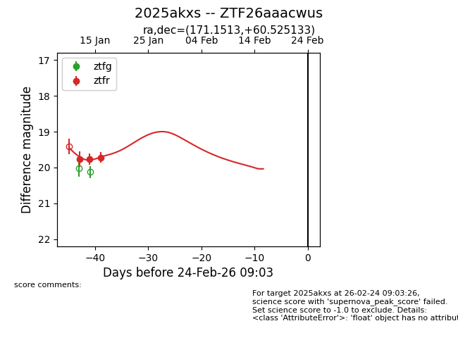
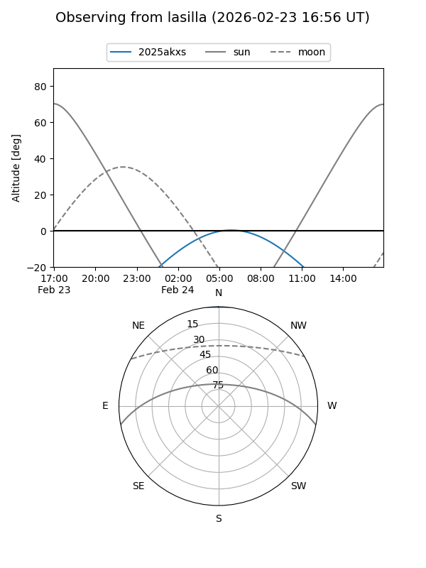
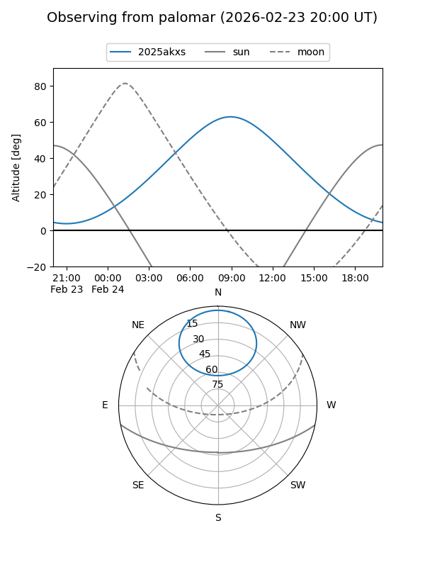
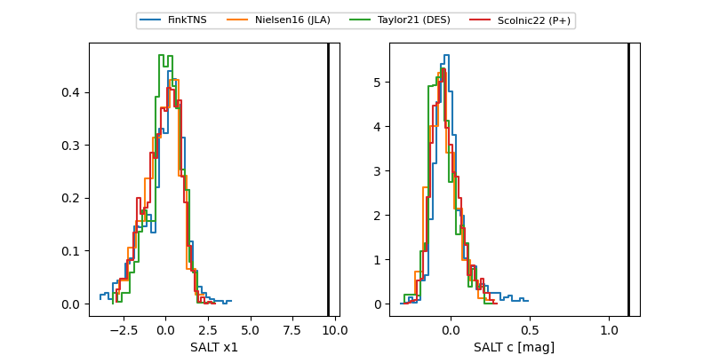

2025akxs
Target 2025akxs at 2026-01-15 09:05
Aliases and brokers:
FINK: link
Lasair: link
ALeRCE: link
TNS: link
YSE: link
alt names
ZTF26aaacwus (ztf,fink_ztf)
2025akxs (tns,yse)
Coordinates:
equatorial (ra, dec) = 171.1513,+60.52513
equatorial (HMS+DMS) = 11:24:36.30,+60:31:30.48
galactic (l, b) = (140.7468,+53.49654)
Flags:
Photometry:
last ztfr=19.77
2 ztfr detections
Lightcurve

Visibility


Additional plots
